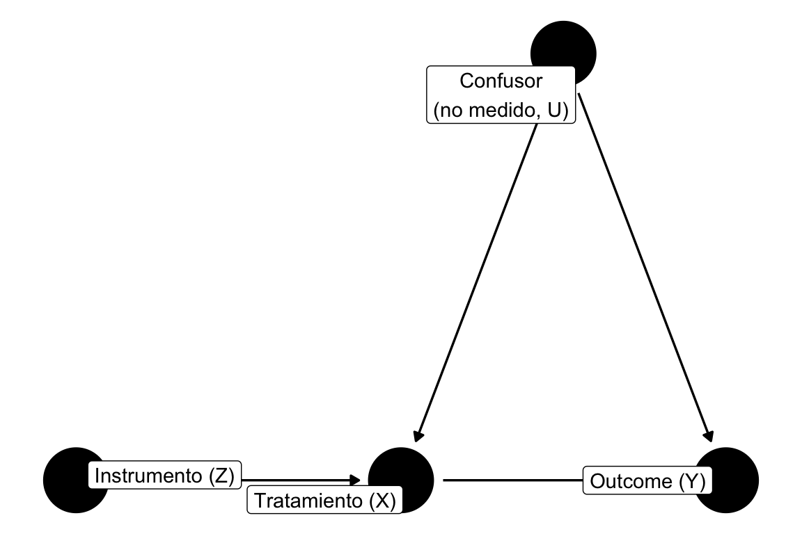
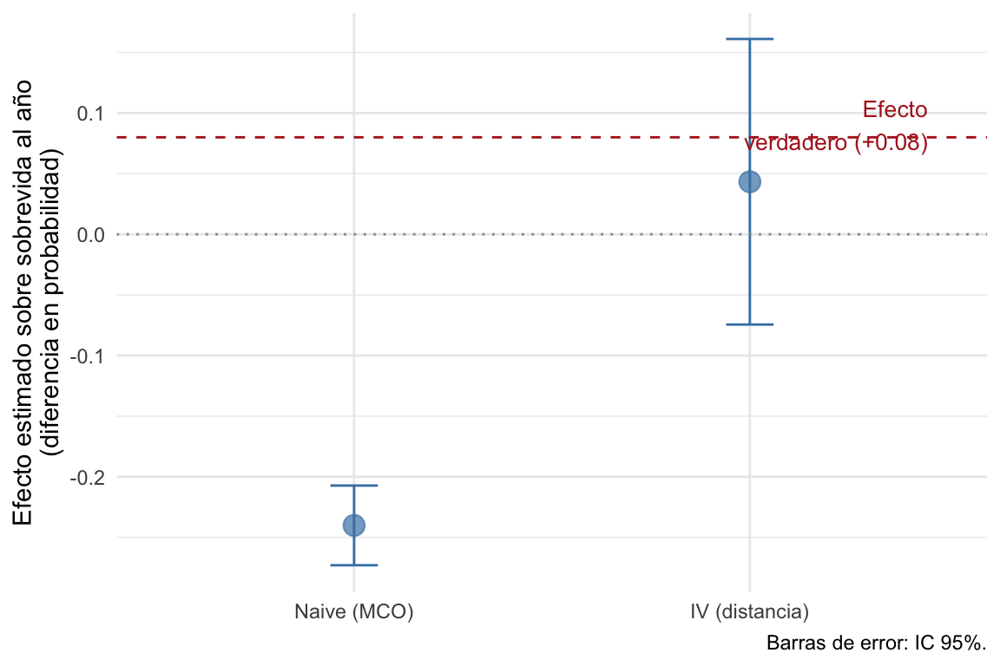
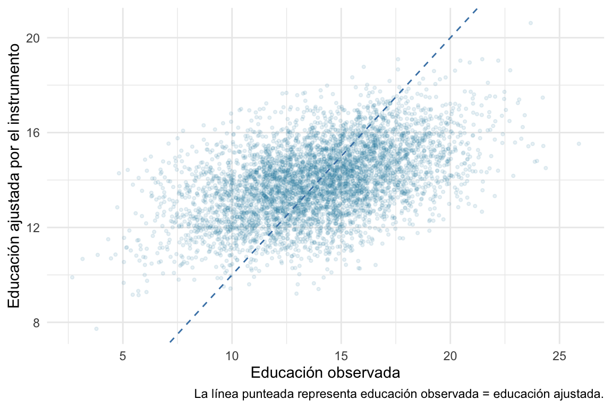
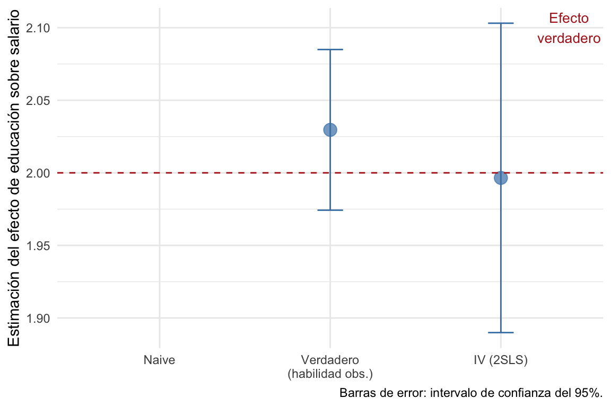
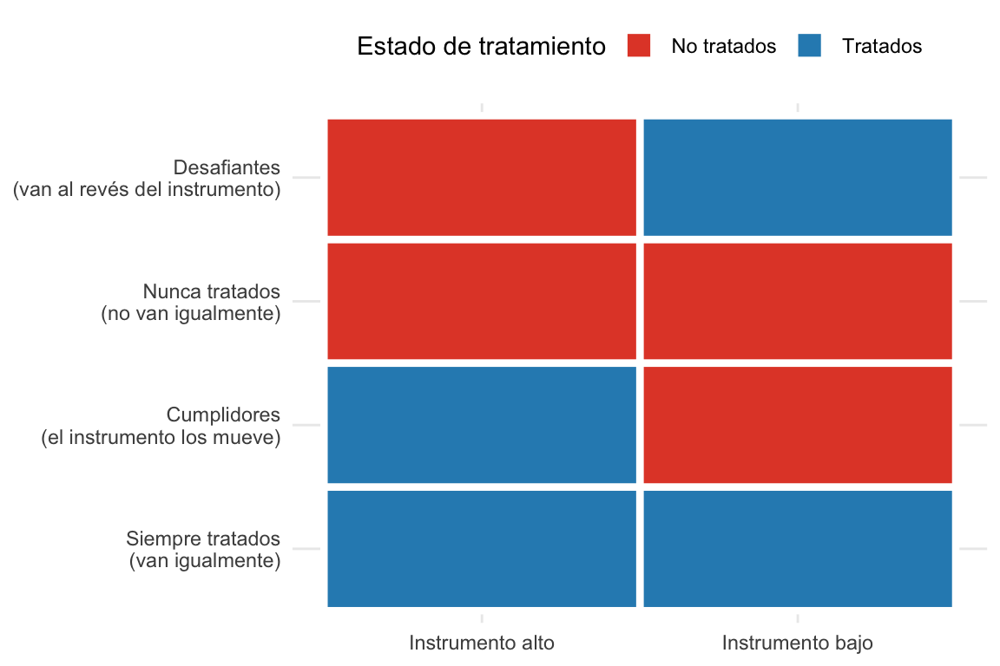

Veamos un escenario clásico de los estudios pseudoexperimentales. ¿Ir a la universidad te hace ganar más dinero? A primera vista parece una pregunta con respuesta obvia. Pero pensalo un segundo: las personas que acumulan más años de educación también tienden a ser más hábiles, más disciplinadas, provenientes de familias con más recursos. Si ganan más, ¿es por la educación, o por todo lo demás que viene con ella? Estamos ante el problema clásico de diferencias basales entre los grupos. Desde ya es obvio que no podemos aleatorizar la educación. Nadie sortea quién va a la universidad. Entonces, si queremos estimar el efecto causal de la educación sobre el salario, estamos en problemas: el tratamiento que nos interesa está contaminado por variables que no podemos controlar, y muchas veces, ni siquiera medir. Y si no podemos medir tampoco podemos recurrir a muchas de las tecnicas que vimos previamente como el matching.
La estrategia que veremos en este capítulo, las variables instrumentales son una forma de salir de ese problema. La idea central es simple: en lugar de usar toda la variación que existe en el tratamiento, vamos a usar únicamente la parte que podemos garantizar que es exógena. Para eso necesitamos encontrar algo, un instrumento, que mueva el tratamiento de forma cuasi-aleatoria, sin afectar el resultado por ningún otro camino. Pero que queremos decir con exógeno y endógeno.
10.1 El problema de la endogeneidad
Empecemos por nombrar el problema con precisión. En el capítulo de DAGs vimos que cuando hay un backdoor abierto entre el tratamiento y el resultado, la regresión simple no mide el efecto causal. Vamos a simplificar el problema de la educación y salario a un solo backdoor, la habilidad cognitiva de los sujetos. El DAG se ve más o menos así:
Figura 10.1: La habilidad cognitiva abre un backdoor entre educación y salario.
La habilidad afecta tanto cuánto estudia una persona como cuánto gana. Es un confusor, y uno no medido, para peor. El problema ya lo conocemos bien, si ajustamos la regresión \(\text{salario} = \beta_0 + \beta_1 \cdot \text{educación}\), el coeficiente \(\hat{\beta}_1\) va a absorber parte del efecto de la habilidad y va a sobreestimar el efecto real de la educación.
Vamos a introducir un poco de la terminología que usamos en este tipo de diseño (aunque se darán cuenta que no es más que cambiarle el nombre a fenómenos que conocemos). En este modelo, educación es una variable endógena: eso quiere decir que dentro del modelo hay algo que la causa (en este caso la habilidad), en criollo que recibe una flecha. Se usa el término endógeno para remarcar que en parte es generada desde adentro del modelo. Lo opuesto es una variable exógena: algo que no tiene flechas apuntándole en el DAG, cuyo valor no depende de ninguna otra variable del modelo.1
1 La distinción exógeno/endógeno viene de la econometría y es básicamente sinónimo de la distinción sin-backdoors/con-backdoors que ya conocemos del capítulo de DAGs. Tenerlo claro evita confusiones cuando leas la literatura.
¿Podríamos simplemente controlar por habilidad y cerrar el backdoor? En principio sí. Pero hay un problema: la habilidad no está medida. En los datos que tenemos, no existe ninguna columna llamada habilidad. Si no la podemos incluir en la regresión, el backdoor queda abierto.
Esto es justamente lo que hace difícil este tipo de problema. No alcanza con tener más datos; alcanza con tener los datos correctos. Y a veces los datos correctos no existen.
Simulemos una situación así para que los números sean concretos:
Ver el código
set.seed(42)n <-5000# Habilidad: no observable en la prácticahabilidad <-rnorm(n, mean =0, sd =1)# Instrumento: educación del padre (sí observable)educ_padre <-rnorm(n, mean =12, sd =3)# Educación: causada por habilidad y por educación del padreeduc <-8+0.5* educ_padre +2* habilidad +rnorm(n, sd =2)# Salario: causado por educación (efecto verdadero = 2) y por habilidadsalario <-2* educ +3* habilidad +rnorm(n, sd =5)ed_fake <-tibble(habilidad, educ_padre, educ, salario)
En este mundo simulado, el efecto verdadero de un año más de educación sobre el salario es 2. Pero si ajustamos la regresión sin controlar por habilidad:
La estimación sale en torno a 3.2; muy por encima del valor verdadero de 2. La habilidad infla el coeficiente porque las personas más hábiles se educan más Y ganan más, y ese efecto se cuela en la estimación.
Por supuesto, si pudiéramos observar la habilidad y la incluimos:
Ahora sí recuperamos el valor verdadero (~2). Pero este modelo es ficticio: en la práctica, la habilidad no está en los datos. Necesitamos otra salida.
10.2 La naturaleza como investigadora
Antes de formalizar las condiciones del diseño de variable instrumental, conviene detenerse en la intuición central de la idea.
Pensemos en los estudios aleatorizados. La aleatorización garantiza que el grupo tratamiento y el grupo control sean comparables en promedio, incluyendo en variables no medidas. Las diferencias en los resultados pueden atribuirse al tratamiento porque no hay otra razón sistemática por la que los grupos difieran. Pero pensemos ¿que es realmente la aleatorizacion?, es un fenómeno que genera el tratamiento, y no recibe influencias de otras variables incluidas en el DAG, es decir es una variable exógena
La idea detras de las variables instrumentales hacen algo análogo, pero sin sorteo. En este diseño, no tenemos una aleatorización (siganme en esta: es decir una variable que genera la asignacion al tratamiento sin verse afectada por los confusores) pero podemos buscar situaciones donde la naturaleza misma introduce algo parecido a una aleatorización: un evento, una regla institucional, una característica biológica que determina parcialmente quién recibe el tratamiento, de forma independiente de los confusores que nos preocupan, y mucho más si esa variable exógena se comporta aunque sea en parte, aleatoriamente. Una variable con dichas características sería la famosa variable instrumental Si modelamos nuestro efecto en relación a esa variable, podríamos evitar las backdoors que no son cerrables (e incluso algunas que ni son identificables). En nuestro ejemplo se veria así
Veamos un ejemplo clásico que ilustra esto casi a la perfección, es el que propusieron Angrist y Evans (1998) para estudiar el efecto de tener un tercer hijo sobre la productividad laboral de los padres (Angrist y Evans 1998). Las familias con dos hijos son distintas a las que tienen tres: orientación a la carrera profesional, recursos económicos, prioridades. Esas diferencias confunden cualquier comparación directa. Un estudio aleatorizado es imposible: nadie se presta a que le asignen cuántos hijos tener por sorteo.
Angrist, Joshua D., y William N. Evans. 1998. «Children and Their Parents’ Labor Supply: Evidence from Exogenous Variation in Family Size». American Economic Review 88 (3): 450-77.
El giro creativo fue notar algo sobre las preferencias familiares: los padres tienden a preferir tener hijos de ambos sexos. Si los dos primeros son del mismo sexo, la probabilidad de tener un tercer hijo es notablemente mayor. Y el sexo de los hijos es, para todos los efectos prácticos, aleatorio y para nada es influenciado por variables confusoras. Miremos el DAG:
Figura 10.2: El sexo concordante de los dos primeros hijos como instrumento para tener un tercer hijo. La aleatoriedad biológica del sexo garantiza la exogeneidad.
El sexo de los hijos se puede usar como una variable instrumental, por que cumple con todos los requisitos: 1) es relevante (predice si habrá un tercer hijo), 2) cumple la exclusión (que tus dos primeros hijos sean del mismo sexo no afecta tu productividad laboral por ninguna vía que no sea la decisión de tener un tercero), y 3) es exógeno (la biología no discrimina por ambición profesional). Tranquilos que ahora vamos a hablar de que significa. La “aleatorización” ya estaba ahí, en la naturaleza; el investigador sólo la detectó y la aprovechó.
10.3 ¿Qué es una variable instrumental?
Llegamos al momento de las dfiniciones formales. Pero antes volvamos un segundo a nuestro caso motivador incial. La pregunta que queremos responder es: ¿podemos separar la educación en su parte endógena (causada por habilidad) y su parte exógena (causada por otras cosas)? Y si podemos hacer esa separación, ¿podemos usar sólo la parte exógena para estimar el efecto sobre el salario?
La respuesta es sí, si encontramos el instrumento correcto.
La definición formal de instrumento es una variable \(Z\) que genera el tratamiento \(X\), pero sólo se relaciona con el outcome \(Y\) a través de \(X\). Además tiene que cumplir tres condiciones simultáneamente. Veámoslas con el DAG que estructura todo esto:
Ver el código
dag_iv <-dagify( X ~ Z + U, Y ~ X + U,coords =list(x =c(Z =0, X =1, Y =2, U =1.5),y =c(Z =0, X =0, Y =0, U =1) ),labels =c(Z ="Instrumento (Z)",X ="Tratamiento (X)",Y ="Outcome (Y)",U ="Confusor\n(no medido, U)" ))ggdag(dag_iv, use_labels ="label", text =FALSE) +theme_dag_blank() +labs(title =NULL)

Figura 10.3: Estructura de una variable instrumental. El instrumento Z mueve el tratamiento X, pero sólo se relaciona con el outcome Y a través de X.
10.3.1 Relevancia
El instrumento debe estar corelacionado con el tratamiento:
Esto es comprobable empíricamente: simplemente corremos la regresión \(X \sim Z\) y vemos si hay una asociación. La regla de oro es que el estadístico \(F\) de esa primera regresión sea mayor a 10.2 Si el \(F\) es chico, el instrumento es débil y los problemas se acumulan: un instrumento débil apenas mueve el tratamiento, y esa poca variación exógena que introduce es insuficiente para identificar bien el efecto.
2 El umbral \(F > 10\) viene de Staiger y Stock (1997) y es la referencia estándar en la literatura. Algunos trabajos más recientes sugieren umbrales más altos, por encima de 100 en ciertos casos, dependiendo del diseño. Lo que hay que tener claro es que F = 10 es un mínimo, no un objetivo.
10.3.2 Exclusión
El instrumento debe afectar al outcome únicamente a través del tratamiento:
\[Z \rightarrow X \rightarrow Y \qquad \text{y no} \quad Z \rightarrow Y \qquad \text{es decir,} \quad \text{cor}(Z, Y | X) = 0\]
En el DAG, esto significa que no hay ninguna flecha que vaya directamente de \(Z\) a \(Y\). La restricción de exclusión es la más difícil de las tres: no se puede testear estadísticamente de forma directa. Siempre requiere argumentación teórica. Un instrumento puede ser relevante y exógeno pero violar la exclusión si tiene alguna vía alternativa hacia el outcome que no pase por el tratamiento.
10.3.3 Exogeneidad
El instrumento no debe estar correlacionado con los confusores no medidos:
\[\text{cor}(Z, U) = 0\]
En el DAG, esto significa que no hay flechas entrando al nodo de \(Z\). El instrumento es “exógeno al sistema”: su variación no viene de la habilidad ni de ninguna otra variable omitida. En la práctica, esto también requiere argumentación más que prueba estadística.
Volviendo al ejemplo de educación y salario: ¿qué cumple estas tres condiciones? Una candidata es la educación del padre. La educación del padre probablemente influye en cuánto estudia el hijo, hijos de padres educados tienden a ir más a la universidad (relevancia). La educación del padre no determina directamente el salario del hijo décadas después, no hay un mecanismo claro que no pase por la educación del hijo (exclusión). Y la educación de tus padres te tocó sin que vos puedas elegirla, es previa a vos (exogeneidad).3
3 La exogeneidad del instrumento es la parte más razonable de defender para la educación del padre, pero la exclusión es más debatible. ¿La educación del padre no podría afectar el salario del hijo por otras vías: redes sociales, influencias, entorno cultural? Esta es exactamente la discusión que hay que dar al defender un instrumento.
10.4 Encontrar buenos instrumentos es difícil, instrumentos que funcionan y que no lo hacen
Es importante que recordemos que de las tres características que debe presentar una variable instrumental, sólo una (la relevancia) puede ser verificada empíricamente. Las otras dos surgen de nuestro planteamiento teórica del problema, y más formalmente, de como pensamos que es la estructura del DAG. Por eso, el buen instrumento no se encuentra en los datos; se encuentra pensando el problema. Esto tambien es una debilidad de este tipo de diseño, nuestro planteamiento teórico y nuestro DAG pueden ser sujetos a debate. Podemos documentarnos, utilizar estudios previos y trabajar creativamente para que este isntrumento sea lo más convincente posible, pero al final del día no hay una evidencia de que lo haya sido.
A modo de inspiración vamos a enumerar un par de estudios clásicos que han usado variables instrumentales de forma creativa y convincente, y luego vamos a analizar un caso donde el instrumento no funcionó por una violación de la exclusión.
El ejemplo más famoso de la historia de las variables instrumentales lo dio Joshua Angrist en 1990, estudiando el efecto del servicio militar sobre los salarios de los veteranos de Vietnam (Angrist 1990). Los que se enlistan en el ejército no son una muestra aleatoria: tienden a tener menos opciones educativas y laborales previas, lo que confunde cualquier comparación directa. La solución fue usar la lotería de reclutamiento de Vietnam como instrumento. En 1969, el gobierno de Estados Unidos asignó números del 1 al 366, uno por cada día del año, y los hombres cuyos cumpleaños correspondían a los números más bajos eran llamados primero a filas. Esta asignación era genuinamente aleatoria, ninguna habilidad, motivación ni origen socioeconómico influía en el número que te tocaba. El número de lotería tiene una relevancia fuerte (de hecho su correlacion con el tratamiento es perfecta, ya que era el mecanismo que asignaba el mismo), cumple la exclusión (nadie podría en duda que una racha de suerte en un sorteo pueda influenciar el salario que recibes 10 años después), y es exógeno (es una lotería, no es posible que sea causado por ninguna covariable del modelo, incluso las que no hemos podido identificar).
Angrist, Joshua D. 1990. «Lifetime Earnings and the Vietnam Era Draft Lottery: Evidence from Social Security Administrative Records». American Economic Review 80 (3): 313-36.
Figura 10.4: La lotería de reclutamiento de Vietnam como instrumento para estimar el efecto del servicio militar sobre los salarios.
Otro ejemplo ilustrativo es el de Green y Winik (2010), que estudiaron el efecto del tiempo de encarcelamiento sobre la reincidencia delictiva (Green y Winik 2010). Los jueces no asignan sentencias al azar: tienden a dar más tiempo a quienes consideran más peligrosos, lo que confunde la comparación. La solución fue usar la asignación cuasi-aleatoria de jueces como instrumento: los casos se distribuyen entre jueces de forma administrativa, y los jueces varían sistemáticamente en su severidad. El juez asignado es relevante (afecta la sentencia), cumple la exclusión (no influye en la reincidencia por ninguna vía que no sea la sentencia), y es exógeno (la asignación no se basa en características del acusado).
Green, Donald P., y Daniel Winik. 2010. «Using Random Judge Assignments to Estimate the Effects of Incarceration and Probation on Recidivism among Drug Offenders». Criminology 48 (2): 357-87.
Figura 10.5: Asignación cuasi-aleatoria de jueces como instrumento para estimar el efecto de la sentencia sobre la reincidencia.
Un instrumento muy usado en ciencias de la salud es la distancia geográfica al hospital de referencia. La lógica es simple: las personas que viven más cerca de un hospital de alta complejidad tienen mayor probabilidad de recibir atención allí, no porque estén más enfermas sino por pura accesibilidad geográfica. La distancia cumple las tres condiciones: es relevante, es exógena (las personas no eligen dónde vivir en función del hospital más cercano, al menos en general), y cumple la exclusión (vivir a cinco kilómetros de un centro especializado no debería afectar tu pronóstico por ningún camino que no pase por el tipo de atención que recibís).
Figura 10.6: Distancia al hospital de cuidados prolongados (LTACH) como instrumento. La severidad de la enfermedad confunde la relación entre derivación y sobrevida, pero no determina dónde vive el paciente.
Kahn y colaboradores usaron esta estrategia para estudiar si la derivación a hospitales de cuidados prolongados (LTACH) mejoraba la sobrevida al año en pacientes críticos (Kahn et al. 2013). El problema de selección era severo: los hospitales derivaban a sus pacientes más complejos a los LTACH, los mismos que tenían peor pronóstico de base. Cuando se comparaba la sobrevida de los derivados contra los no derivados sin ningún ajuste, los LTACH parecían empeorar los resultados —puro artefacto de confusión por severidad. Podemos simular exactamente esta situación. Supongamos que la derivación a LTACH tiene un efecto positivo real y modesto sobre la sobrevida (diferencia de 8 puntos porcentuales en probabilidad), pero los pacientes más graves son los que sistemáticamente se derivan:
Kahn, Jeremy M., Rachel M. Werner, Guy David, Thomas R. Ten Have, Nicole M. Benson, y David A. Asch. 2013. «Effectiveness of Long-term Acute Care Hospitalization in Elderly Patients with Chronic Critical Illness». Medical Care 51 (1): 4-10.
Ver el código
set.seed(123)n <-4000# Severidad: variable no medida, distribuida normalseveridad <-rnorm(n, 0, 1)# Instrumento: distancia en km, independiente de la severidaddistancia_km <-runif(n, 5, 80)# Derivación a LTACH: los más graves van más (selección), los más lejos van menosp_ltach <-plogis(0.5+1.2* severidad -0.04* distancia_km)ltach <-rbinom(n, 1, p_ltach)# Sobrevida: LTACH ayuda (+0.08 en probabilidad), severidad perjudicap_sobrevida <-plogis(0.5+0.2* ltach -2.0* severidad)sobrevida <-rbinom(n, 1, p_sobrevida)datos_ltach <-tibble(severidad, distancia_km, ltach, sobrevida)# Verificar que la severidad promedio es mayor en derivadosdatos_ltach |>group_by(ltach) |>summarise(n =n(),severidad_media =mean(severidad),sobrevida_obs =mean(sobrevida) ) |>mutate(ltach =if_else(ltach ==1, "Derivado a LTACH", "No derivado")) |>gt() |>fmt_number(columns =c(severidad_media, sobrevida_obs), decimals =2) |>cols_label(ltach ="Grupo",n ="N",severidad_media ="Severidad media",sobrevida_obs ="Sobrevida observada" )
Grupo
N
Severidad media
Sobrevida observada
No derivado
2845
−0.25
0.65
Derivado a LTACH
1155
0.64
0.41
La tabla muestra el mecanismo de selección: los derivados tienen mayor severidad media y, como consecuencia, menor sobrevida observada —aunque la derivación per se sea beneficiosa. Si ajustamos una regresión simple, la conclusión sería que el LTACH mata pacientes:
#| label: fig-ltach-comparacion#| fig-cap: "Estimación naive vs. IV del efecto de la derivación a LTACH sobre la sobrevida al año. El efecto verdadero en la simulación es +0.08. La regresión simple invierte el signo por selección de pacientes más graves."#| code-fold: trueresultados_ltach <-tribble(~modelo, ~estimacion, ~error,"Naive (MCO)", coef(modelo_naive)["ltach"],tidy(modelo_naive) |>filter(term =="ltach") |>pull(std.error),"IV (distancia)", tidy(modelo_iv) |>filter(term =="ltach") |>pull(estimate),tidy(modelo_iv) |>filter(term =="ltach") |>pull(std.error))resultados_ltach |>mutate(modelo =factor(modelo, levels =c("Naive (MCO)", "IV (distancia)"))) |>ggplot(aes(x = modelo, y = estimacion)) +geom_point(size =4, color ="steelblue") +geom_errorbar(aes(ymin = estimacion -1.96* error,ymax = estimacion +1.96* error),width =0.12, color ="steelblue") +geom_hline(yintercept =0.08, color ="firebrick", linetype ="dashed") +geom_hline(yintercept =0, color ="grey60", linetype ="dotted") +annotate("text", x =2.45, y =0.09, label ="Efecto\nverdadero (+0.08)",color ="firebrick", size =3.5, hjust =1) +labs(x =NULL,y ="Efecto estimado sobre sobrevida al año\n(diferencia en probabilidad)",caption ="Barras de error: IC 95%.") +theme_minimal()

La regresión naive invierte el signo: concluye que el LTACH reduce la sobrevida en aproximadamente 10 puntos porcentuales, cuando el efecto verdadero es positivo (+8 pp). El instrumento de distancia corrige el sesgo y recupera una estimación centrada en el valor correcto. Nótese que la primera etapa tiene un F holgadamente mayor a 10, lo que confirma que la distancia predice de forma suficientemente fuerte la probabilidad de derivación.
10.4.1 Cuando la exclusión falla: el caso de la angioplastia en el infarto agudo
Este es un caso instructivo porque ilustra qué hacer cuando el instrumento casi funciona. En este estudio se pretendió encontrar el efecto de la angioplastia coronaria percutánea (PCI) en la sobrevida al infarto agudo de miocardio (McClellan, McNeil y Newhouse, 1994) (McClellan, McNeil, y Newhouse 1994). Los autores querían saber si recibir PCI mejoraba la sobrevida. El análisis observacional tenía un fuerte sesgo de confusión: los pacientes que recibían PCI tendían a ser más jóvenes, más estables, con menos comorbilidades.
McClellan, Mark, Barbara J. McNeil, y Joseph P. Newhouse. 1994. «Does More Intensive Treatment of Acute Myocardial Infarction in the Elderly Reduce Mortality? Analysis Using Instrumental Variables». JAMA 272 (11): 859-66.
La propuesta fue usar como instrumento la disponibilidad de PCI en el hospital más cercano al domicilio del paciente: si uno vive cerca de un hospital que hace PCI, tiene más probabilidad de recibirlo cuando llega infartado, sin que eso refleje diferencias en su estado de salud previo. El instrumento parecía cumplir las tres condiciones.
Pero al analizar los datos apareció un problema. Los hospitales con capacidad para hacer PCI también tenían mejores protocolos para todo lo demás, aspirina al egreso, beta-bloqueantes, monitoreo más estricto. La variable “vivir cerca de un hospital PCI-capaz” no sólo predecía recibir PCI; también predecía recibir mejor cuidado general (con PCI o no) y esto influía en la sobrevida. La restricción de exclusión estaba violada: el instrumento tenía una vía alternativa hacia el outcome que no pasaba por el PCI.
Figura 10.7: El instrumento ‘cercanía a hospital PCI’ viola la restricción de exclusión: esos hospitales también proveen mejor cuidado general, creando un camino alternativo hacia el outcome.
La respuesta de los autores fue inteligente: reformularon la pregunta. En lugar de “¿cuál es el efecto del PCI sobre la sobrevida?”, la pregunta pasó a ser “¿cuál es el efecto de ser atendido en un hospital PCI-capaz?”. Ese efecto compuesto, que incluye el PCI más todos los protocolos asociados— sí es identificable con ese instrumento. Es un hallazgo valioso, aunque responde una pregunta diferente a la original.
Este episodio enseña algo que vale generalizar: una violación de la exclusión no invalida necesariamente el análisis. Puede redefinir qué pregunta se está respondiendo. El requisito es ser honesto al respecto, y no presentar el resultado como si respondiera la pregunta original.
🔎 Tres preguntas para evaluar un instrumento
Iwashyna y Kennedy (2013) proponen que cualquier lector escéptico de un análisis de variables instrumentales debería hacerse tres preguntas (Iwashyna y Kennedy 2013):
1. ¿El instrumento genera diferencias reales en el tratamiento? Si la asociación entre instrumento y tratamiento es débil (\(F\) pequeño), la estimación va a ser inestable y potencialmente sesgada. Buscá que el estadístico \(F\) de la primera etapa sea claramente mayor a 10.
2. ¿Hay alguna vía por la que el instrumento pueda afectar el outcome sin pasar por el tratamiento? Esta es la restricción de exclusión. No puede verificarse estadísticamente — requiere pensar el mecanismo. Dibujá el DAG y buscá flechas alternativas. Si encontrás una, el instrumento puede estar midiendo algo distinto de lo que creés (o puede requerir reformular la pregunta, como en el caso del PCI).
3. ¿Hay algo que cause a la vez que alguien reciba el instrumento y que tenga el outcome? Esta es la exogeneidad. Si los que “reciben” el instrumento son sistemáticamente distintos en características no medidas que también afectan el outcome, la confundencia vuelve por la puerta de atrás.
Si las tres respuestas son satisfactorias, el análisis puede producir evidencia causal de alta calidad. Si alguna falla, la interpretación causal se debilita —y cuánto se debilita depende del contexto y la magnitud de la violación.
10.5 Análisis de variable instrumentales: Cuadrados mínimos de dos etapas (2SLS)
Bien, supongamos que encontramos un instrumento válido. ¿Cómo lo usamos?
La lógica es la siguiente. Queremos usar únicamente la variación en la educación que proviene del instrumento; la parte exógena, que no está contaminada por la habilidad. El método se llama cuadrados mínimos de dos etapas (two-stage least squares, 2SLS) y hace exactamente lo que el nombre dice: dos regresiones, una tras otra.
El estadístico \(F\) es grande y el coeficiente de educ_padre es claramente distinto de cero: la educación del padre predice la educación del hijo. El instrumento es relevante.
Lo que nos interesa es guardar los valores predichos de esta regresión: la “educación ajustada por el instrumento”. Estos valores predichos capturan únicamente la parte de la educación que se mueve con la educación del padre —es decir, la parte exógena.
Ver el código
ed_fake_pred <- ed_fake |>mutate(educ_hat =fitted(primera_etapa))ed_fake_pred |>ggplot(aes(x = educ, y = educ_hat)) +geom_point(alpha =0.1, size =0.8) +geom_abline(slope =1, intercept =0, color ="steelblue", linetype ="dashed") +labs(x ="Educación observada",y ="Educación ajustada por el instrumento",caption ="La línea punteada representa educación observada = educación ajustada.") +theme_minimal()

La educación ajustada no es idéntica a la observada: tiene menos variación, porque sólo captura la parte que explica la educación del padre. Esa reducción de varianza es justamente lo que queremos —estamos filtrando el ruido endógeno.
10.5.2 Segunda etapa
Ahora regresamos el outcome sobre los valores predichos del tratamiento:
Ahora el coeficiente de educación es aproximadamente 2, mucho más cerca del valor verdadero que el modelo naive. Al usar sólo la variación exógena en la educación, eliminamos la confusión por habilidad.
⚠️ Una advertencia importante: los errores estándar de esta segunda etapa manual son incorrectos. El software no sabe que educ_hat es una predicción de primera etapa, así que subestima la incertidumbre. No usemos este enfoque en dos pasos para inferencia; lo hicimos así sólo para entender la mecánica. Para estimar correctamente, usamos el paquete que viene a continuación.
10.5.3 Juntando todo: el paquete {estimatr}
El paquete {estimatr} implementa el 2SLS en una sola función, con los errores estándar correctos. La sintaxis es:
outcome ~ tratamiento | instrumento
La barra separa la segunda etapa (izquierda) de la primera etapa (derecha):
Comparemos los tres modelos: el naive, el verdadero (ficticio), y el IV:
Ver el código
resultados <-tribble(~modelo, ~estimacion, ~error,"Naive", coef(modelo_naive)["educ"], tidy(modelo_naive) |>filter(term =="educ") |>pull(std.error),"Verdadero\n(habilidad obs.)", coef(modelo_verdadero)["educ"], tidy(modelo_verdadero) |>filter(term =="educ") |>pull(std.error),"IV (2SLS)", tidy(modelo_iv) |>filter(term =="educ") |>pull(estimate), tidy(modelo_iv) |>filter(term =="educ") |>pull(std.error)) |>mutate(estimacion =as.numeric(estimacion),error =as.numeric(error) )resultados |>mutate(modelo =factor(modelo, levels =c("Naive", "Verdadero\n(habilidad obs.)", "IV (2SLS)"))) |>ggplot(aes(x = modelo, y = estimacion)) +geom_point(size =4, color ="steelblue") +geom_errorbar(aes(ymin = estimacion -1.96* error,ymax = estimacion +1.96* error),width =0.15, color ="steelblue") +geom_hline(yintercept =2, color ="firebrick", linetype ="dashed") +annotate("text", x =3.4, y =2.1, label ="Efecto\nverdadero", color ="firebrick", size =3.5) +labs(x =NULL, y ="Estimación del efecto de educación sobre salario",caption ="Barras de error: intervalo de confianza del 95%.") +theme_minimal()#> Warning: Removed 1 row containing missing values or values outside the scale range#> (`geom_point()`).

Figura 10.8: Comparación de las tres estimaciones. La línea roja punteada es el efecto verdadero (2). El modelo naive sobrestima por la confusión con habilidad. El modelo IV lo recupera sin necesitar medir habilidad.
El modelo IV no es tan preciso como el modelo verdadero, tiene barras de error más amplias, pero apunta al lugar correcto. Eso es el precio de usar sólo la variación exógena: hay menos información para estimar, así que la incertidumbre crece.
10.6 Múltiples instrumentos y covariables
Si tenemos más de un instrumento válido, podemos usarlos todos en la primera etapa para predecir mejor el tratamiento. Por ejemplo, tanto la educación del padre como la educación de la madre:
Ver el código
set.seed(42)ed_fake <- ed_fake |>mutate(educ_madre =rnorm(n, mean =11, sd =3) +0.3* habilidad +rnorm(n, sd =2))#> Warning: There were 2 warnings in `mutate()`.#> The first warning was:#> ℹ In argument: `educ_madre = rnorm(n, mean = 11, sd = 3) + 0.3 * habilidad +#> rnorm(n, sd = 2)`.#> Caused by warning in `rnorm(n, mean = 11, sd = 3) + 0.3 * habilidad`:#> ! longer object length is not a multiple of shorter object length#> ℹ Run `dplyr::last_dplyr_warnings()` to see the 1 remaining warning.modelo_iv_2 <-iv_robust(salario ~ educ | educ_padre + educ_madre, data = ed_fake)tidy(modelo_iv_2) |>filter(term =="educ") |>select(term, estimate, std.error, p.value) |>gt() |>fmt_number(columns =c(estimate, std.error), decimals =3) |>fmt_number(columns = p.value, decimals =4) |>cols_label(term ="Variable", estimate ="Estimación", std.error ="Error estándar", p.value ="p-valor")
Variable
Estimación
Error estándar
p-valor
educ
2.739
0.035
0.0000
Al tener más variación exógena para explotar, la estimación es más precisa (error estándar más chico).
También es posible, y frecuente, controlar por otras covariables además del instrumento. La sintaxis es agregar las covariables en ambos lados de la barra, porque matemáticamente deben estar presentes en las dos etapas:
La covariable edad aparece a la derecha de la barra (primera etapa) y a la izquierda (segunda etapa).4
4 Si no la incluís en la primera etapa, el software va a rechazarte con un error. No es un capricho: matemáticamente las covariables deben ser sus propios instrumentos para que el sistema de ecuaciones quede identificado.
10.7 ¿Qué efecto estamos midiendo?
Cuando usamos variables instrumentales, no estimamos el efecto promedio del tratamiento para toda la población —lo que en el capítulo de potential outcomes llamamos ATE. Estimamos algo más acotado.
En el ejemplo de la lotería de Vietnam, el instrumento (el número de lotería) sólo afecta a quienes efectivamente cambian su comportamiento según el número que les tocó. Quien habría ido al ejército de todas formas, o quien nunca habría ido sin importar el número, no cambia de comportamiento por el instrumento. Los únicos que cambian su conducta son los que van al ejército si les toca un número bajo pero no van si les toca uno alto. A estos se les llama cumplidores (compliers).
El efecto que estimamos con IV es el efecto causal del tratamiento para los cumplidores —no para toda la población. Por eso, como ya vimos en el capítulo de regresión discontinua, se lo llama efecto promedio local del tratamiento (Local Average Treatment Effect, o LATE).
Ver el código
tibble(grupo =factor(c("Siempre tratados\n(van igualmente)", "Nunca tratados\n(no van igualmente)","Cumplidores\n(el instrumento los mueve)", "Desafiantes\n(van al revés del instrumento)"),levels =c("Siempre tratados\n(van igualmente)", "Cumplidores\n(el instrumento los mueve)","Nunca tratados\n(no van igualmente)", "Desafiantes\n(van al revés del instrumento)") ),`Instrumento bajo`=c("Tratados", "No tratados", "No tratados", "Tratados"),`Instrumento alto`=c("Tratados", "No tratados", "Tratados", "No tratados")) |>pivot_longer(cols =c(`Instrumento bajo`, `Instrumento alto`),names_to ="Instrumento", values_to ="Estado") |>ggplot(aes(x = Instrumento, y = grupo, fill = Estado)) +geom_tile(color ="white", linewidth =1.5) +scale_fill_manual(values =c("Tratados"="#2b8cbe", "No tratados"="#e34a33")) +labs(x =NULL, y =NULL, fill ="Estado de tratamiento") +theme_minimal() +theme(legend.position ="top")

Figura 10.9: Los cuatro tipos de personas según su respuesta al instrumento. El IV estima el efecto causal sólo para los cumplidores.
10.7.1 IV, RCT y el LATE: ¿qué pregunta responde cada uno?
Iwashyna y Kennedy (2013) señalan que el RCT (los ensayos clínicos aleatorizados) y el análisis IV responden preguntas sutilmente distintas (Iwashyna y Kennedy 2013):
Iwashyna, Theodore J., y Edward H. Kennedy. 2013. «Instrumental Variable Analyses: Exploiting Natural Randomness to Understand Causal Mechanisms». Annals of the American Thoracic Society 10 (3): 255-60.
El RCT, responde: “¿cuál es el efecto promedio del tratamiento para todos los pacientes que cumplieran los criterios de inclusión?” Es un promedio sobre toda la población elegible.
El IV en cambio, responde: “¿cuál es el efecto del tratamiento para quienes cambian su comportamiento gracias al instrumento?” Es un promedio sobre los cumplidores —un subgrupo que puede ser más pequeño y específico que la población general.
En un RCT con incumplimiento, la diferencia entre ambas preguntas es exactamente el cociente entre el efecto de la asignación sobre el outcome (ITT) y el efecto de la asignación sobre el tratamiento recibido. Si todos los asignados al tratamiento lo reciben (compliance perfecto), las dos preguntas tienen la misma respuesta. Si el compliance es parcial, divergen.
¿Es esto un problema? Depende. En muchas aplicaciones, los cumplidores son exactamente la población relevante para una decisión de política: son quienes efectivamente cambiarían su comportamiento si la intervención se implementara. En esos casos, el LATE es exactamente lo que nos interesa. En otros contextos —cuando queremos saber el efecto para todos, no sólo para quienes responden al instrumento— la pregunta que responde el IV puede ser demasiado local para generalizarse.
10.8 El procedimiento general
Para aplicar variables instrumentales en la práctica, el flujo es el siguiente:
Paso 1 — Relevancia. Correr la primera etapa (\(X \sim Z\)) y verificar que el estadístico \(F > 10\). Si el \(F\) es chico, el instrumento es débil y la estimación va a ser poco confiable.
Ver el código
primera_etapa <-lm(tratamiento ~ instrumento, data = datos)glance(primera_etapa) # ver el F
Paso 2 — Exclusión. Argumentar teóricamente que el instrumento no afecta el outcome por ningún camino que no pase por el tratamiento. Dibujá el DAG. Buscá flechas alternativas. Si encontrás una, pensá si reformular la pregunta te permite seguir usando el instrumento —como en el caso del PCI.
Paso 3 — Exogeneidad. Argumentar que el instrumento no está correlacionado con los confusores no medidos. Pensá en cómo se generó el instrumento: ¿fue asignado aleatoriamente? ¿Es previo al sistema causal de interés? ¿Hay razones para creer que quienes “reciben” el instrumento son distintos en variables que también afectan el outcome?
Paso 4 — Estimar el 2SLS. Usar iv_robust() del paquete {estimatr}:
Ver el código
library(estimatr)modelo_iv <-iv_robust(outcome ~ tratamiento | instrumento, data = datos)# Con covariables:modelo_iv <-iv_robust(outcome ~ tratamiento + cov1 | instrumento + cov1, data = datos)# Con múltiples instrumentos:modelo_iv <-iv_robust(outcome ~ tratamiento | instrumento1 + instrumento2, data = datos)tidy(modelo_iv)
Paso 5 — Interpretar con cuidado. El efecto estimado es un LATE: el efecto para los cumplidores. Cuanto más restringido sea el grupo de cumplidores, más local es la estimación y más cautela requiere la generalización.
El método de variables instrumentales es poderoso, pero requiere más trabajo de justificación que los métodos anteriores. El matching requería justificar la ignorabilidad; DiD requería justificar la tendencia paralela; la regresión discontinua requería la continuidad en el umbral. Las variables instrumentales requieren justificar las tres condiciones del instrumento —y la más importante, la exclusión, nunca puede probarse de manera puramente estadística. La credibilidad del instrumento depende de entender el problema, no de correr más modelos.